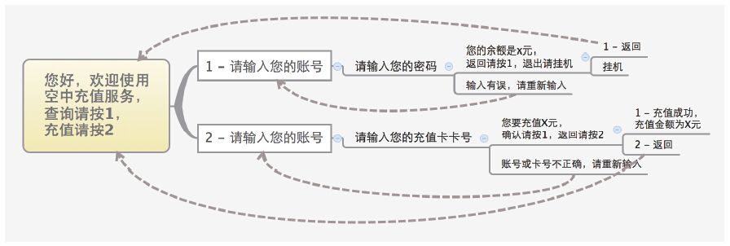

17.2 用Lua实现IVR
用Lua可以创建很灵活的IVR应用，在此我们就来看一个电话充值的例子。
假设我们有一项电话自动充值服务，为会员提供自动服务，我们把这项服务称为空中充值服务。其中，每个会员都会有一个会员账号（以及密码），它可以根据账号查询余额，或者向该账号充值。如果需要充值，会员需要事先购买充值卡，在充值时需输入充值卡卡号来达到充值的目的。
为了提供比较好的用户体验，我们精心设计了一个充值流程，并画了一个简单的思维导图 [1] ，如图17-1所示。该图非常清晰地描述了用户查询及充值的流程。在此我们先不做太多解释，而是配合脚本代码讲解一下。

图17-1 充值IVR流程思维导图
下面的代码首先是一行注释，接着设置了一些常量和变量：
01 -- Calling card charging demo. Author: Seven Du
02 error_prompt = "say:
输入错误，请重新输入"
03 account = ""
04 digits = ""
05 balance = 100 --
余额
06 charge = 100 --
充值卡上的金额
我们先定义一个do_charge函数，该函数有两个参数account和charge，分别代表被充值的账号和充值的金额。在该函数中，我们没有做写数据库等操作，而是直接将欲充值的金额加到了全局变量中的余额（balance）上。代码如下：
07 function do_charge(account, charge)
08 balance = balance + charge
09 return balance
10 end
接下来定义一个主菜单函数。注意第12行，我们使用session:ready()函数判断该session是否还继续有效（即判断用户是否挂机），如果无效就立即返回。这是因为，我们的菜单可能会有多次循环，而在循环过程中如果用户挂机，并不会中止Lua脚本的执行，因此一定要保证有一定的退出机制。
第13行使用playAndGetDigits函数让用户选择是查询还是充值。第15行进行判断，如果用户输入有效，则将输入的数字（digits，值为1或2）作为函数的参数传入ask_account函数中，并继续执行ask_account提示用户输入账号；当然，如果用户输入错误（最多3次，由playAndGetDigits函数保证），则直接跳到goodbye函数处理，我们下面会看到。main_menu这一段代码如下：
11 function main_menu()
12 if not session:ready() then return end
13 digits = session:playAndGetDigits(1, 1, 3, 5000, "#",
"say:
查询请按1
，充值请按2", error_prompt, "^1|2$")
14 session:execute("log", "INFO main_menu:" .. digits)
15 if not (digits == "") then
16 ask_account(digits)
17 else
18 goodbye()
19 end
20 end
ask_account函数用于询问用户的账号。注意类似第22行对于session:ready()的检测，基本上在每个函数中都有。另外，我们规定账号是4位的，因此在第23行，参数中允许用户输入的最小位长是4，而这里我们使用最大位长是5的原因是，等待用户输入4位账号后，并不立即往下执行，而是等待用户按#号键。这里我们等待用户按#号键完全是一个用户习惯问题。实际上，如果有户不按#号键，我们这里的流程也是可以正常往下执行的 [2] 。
当用户输入账号后，我们将其保存到account变量中。在第29行进行判断，如果在上一步用户选择了“1”，即查询，我们接着调用ask_account_password（第28行）询问密码，否则（用户选择了“2”，充值）调用ask_card（第30行）函数询问卡号进行充值流程。
21 function ask_account(service_type)
22 if not session:ready() then return end
23 digits = session:playAndGetDigits(4, 5, 3, 5000, "#",
"say:
请输入您的账号，以井号结束", error_prompt, "^\\d{4}$")
24 session:execute("log", "INFO account:" .. digits)
25 if not (digits == "") then
26 account = digits
27 if (service_type == "1") then
28 ask_account_password()
29 else
30 ask_card()
31 end
32 else
33 goodbye()
34 end
35 end
ask_account_password及ask_card函数的代码如下所示。它们的代码跟上面讲到的类似，都是收集了信息然后根据收到的信息调用相关函并进行处理。
36 function ask_account_password()
37 if not session:ready() then return end
48 digits = session:playAndGetDigits(4, 5, 3, 5000, "#",
"say:
请输入您的密码，以井号结束", error_prompt, "^\\d{4}$")
39 session:execute("log", "INFO account p:" .. digits)
40 if not (digits == "") then
41 password = digits
42 check_account_password()
43 else
44 goodbye()
45 end
46 end
47 function ask_card()
48 if not session:ready() then return end
49 digits = session:playAndGetDigits(4, 5, 3, 5000, "#",
"say:
请输入您的充值卡卡号，以井号结束", error_prompt, "^\\d{4}$")
50 session:execute("log", "INFO card:" .. digits)
51 if not (digits == "") then
52 card = digits
53 check_account_card()
54 else
55 goodbye()
56 end
57 end
如果用户是在查询，则在用户输入密码后执行检查密码的函数（check_account_password）。在此我们直接使用硬编码（Hard coded）的“1111”（第60行）来验证账号和密码的合法性，在实际使用时可以配合查询数据库或第三方接口去检查密码的合法性。如果密码检查通过，则直接使用TTS技术播放余额（第61行），播放完毕后暂停500毫秒再返回主菜单（第62行）；当然，如果密码检查不通过，也进行相关提示并返回主菜单（第65～66行），以让用户有机会输入正确的值。
58 function check_account_password()
59 if not session:ready() then return end
60 if (account == "1111" and password == "1111") then
61 session:speak("
您的余额是" .. balance .. "
元")
62 session:sleep(500)
63 main_menu()
64 else
65 sesson:speak("
输入有误，请重新输入")
66 main_menu()
67 end
68 end
至此，查询的代码分支就结束了，我们接着看充值的函数。第71行我们硬编码了卡号“2222”，如果用户输入正确，则在第72行语音提示用户将要充值的金额（充值卡上已有的金额，在第6行定义），然后让用户确定是否充值（第73行）。为了简单起见，我们没有再写新的函数，而是将逻辑判断都写到这一个函数里。代码如下：
69 function check_account_card()
70 if not session:ready() then return end
71 if (account == "1111" and card == "2222") then
72 session:speak("
您要充值" .. charge .. "
元")
73 digits = session:playAndGetDigits(1, 1, 3, 10000, "#",
"say:
确认请按1
，返回请按2", error_prompt, "^[12]$")
74 if digits == "1" then
75 balance = do_charge(account, charge)
76 session:speak("
充值成功，充值金额" .. charge ..
"
元，余额为" .. balance .. "
元")
77 main_menu()
78 else
79 if digits == "2" then
80 session:sleep(500)
81 main_menu()
82 else
83 goodbye()
84 end
85 end
96 else
87 session:speak("
输入有误，请重新输入")
88 ask_account("2")
89 end
90 end
如果在上面的步骤中出错，我们会转到goodbye函数，该函数的定义如下（它只是简单地说声再见，然后挂机）：
91 function goodbye()
92 if not session:ready() then return end
93 session:speak("
再见")
94 session:hangup()
95 end
上面是我们定义的函数，实际的脚本执行是从下面的代码才开始的。在本例中，为了使代码清晰，我们没有使用语音文件，而是使用了TTS技术。因此，第96行我们需要设置一下TTS的相关参数，该行可以保证session:speak()能正常放音，但经过测试，session:playAndGetDigits()函数则不能正常放音，因此我们在第97和98行又分别设置了两个参数，保证其能正常放音。
96 session:set_tts_params("tts_commandline", "Ting-Ting");
97 session:setVariable("tts_engine", "tts_commandline")
98 session:setVariable("tts_voice", "Ting-Ting")
设置好这些参数后，我们就可以应答（第99行）、播放欢迎语（第100行），并开始执行主菜单函数（第101行）了。
99 session:answer()
100 session:speak("
您好，欢迎使用空中充值服务")
101 main_menu()
在本例中，我们采用了一种类似状态机的设计，main_menu、ask_*以及check_*等函数都可以看作是一个状态，根据输入的条件不同可以在这几个状态间转换，代码也比较清晰直观。而且，由于Lua的尾递归特性，在这些函数中可以循环地跳转也不会消耗栈空间。当然，我们在每个函数中都使用了session:ready()来判断当前的session是否有效避免了用户挂机后出现无限循环。
[1] 思维导图即Mind Map，是一种利用图像式思考辅助工具来表达思维的工具。在使用繁体中文的地区又称心智图，参见http://zh.wikipedia.org/wiki/心智图。在解决此类问题时，大家也常用流程图。但流程图比较强调流程的正确性，而思维导图更强调思维（思路）的正确性。笔者一般倾向于使用后者，但不管使用前者还是后者，有一个图对于编程实现是非常有帮助的。
[2] 不过要等一会，读者可以自己试一下。也可以尝试把5改成4看看效果，那样的话就可以把语音提示里的“以井号结束去掉了”。